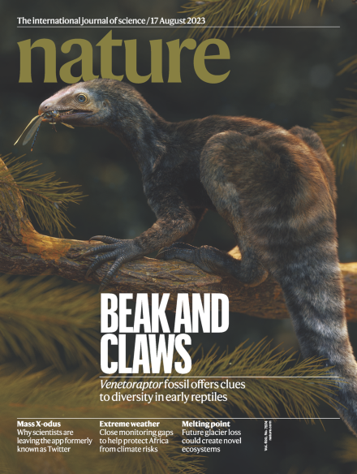
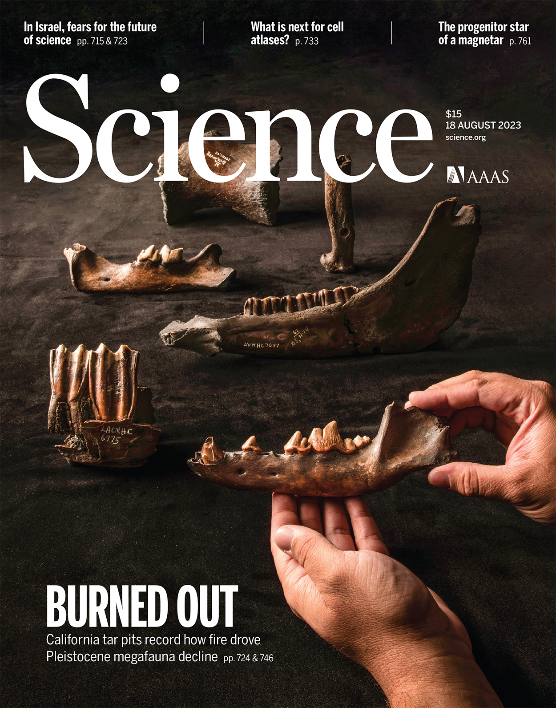

ZOOL430/430L: Animal Physiology and Laboratory Fall 2025
Course Information
- Delivery: In person, BIL 341A
- Lecture time: Wednesday, Friday 12pm-1:15pm
- Assignments: readings, discussions, homeworks, peer reviews, four projects Physiology is the science of how life works.
Lab Information
- Delivery: In person, EDM 101
- Section 1: Tuesday 1:30-5:30pm
- Section 2: Wednesday 1:30-5:30pm
- Assignments: individual work sheets, group labs, individual lab, prelabs and prelab quizzes, partner reviews
How to register and participate
- Register for ZOOL430 CRN 76457 or CRN 77687 5 credits.
- The lab is a critical component of physiology education. The lecture and lab are designed together.
- Please contact me with any questions, issues, or registration problems maybe I can help.
- Learning is a developmental process, attendance is mandatory and engagement is necessary to improve.
Prerequisites
The prerequisite is BIOL275.
You should also have completed Physics, as we will be discussing forces, pressures, gravity, mechanics, etc. as well as general chemistry. Also very helpful (but not a prerequisite) is biochemistry, which will help with metabolism and cellular physiology.
Instructors
- Marguerite A. Butler (https://butlerlab.org)
- Office Location: Edmondson 316
- Email:
- Office Hours: After class and by appointment
- Ilan Matsuyoshi (TA)
- Office Location: Life Science Building
- Email:
- Office Hours: After class and by appointment
- Manuel Spor Leal (TA)
- Office Location: Edmondson 308
- Email:
- Office Hours: After class and by appointment
How to stay informed
- Please check your email, but as people join I will start moving to mainly to using DISCORD to send class announcements and information.
- Please join the class DISCORD server for communication.
- Be sure to turn on your notifications for the DISCORD server (whether you use the phone or desktop version). Here is a helpful link.
- Be sure to turn on your notifications for the DISCORD server (whether you use the phone or desktop version). Here is a helpful link.
- Cool Animal posts. Share cool info with your peers and earn one point per week extra credit for any type of post related to Animals (biology, not pets) and/or Physiology. Post to #cool-animals on DISCORD or to the class FaceBook https://www.facebook.com/groups/AnimalPhysiologyUH/
How to get help
In order of preference, here is how to get help:
- I strongly encourage you to use the course DISCORD server by posting to #general or one of the question channels. You can get your answers faster, and other students in the class (who likely have similar questions) can also benefit from the questions and answers given. Everyone is encouraged to participate.
- Make an appointment https://calendly.com/mbutler808/office-hours. If this is regarding any group work, please be sure to include your partner(s) in the meeting.
- For lab help, make an appointment with Diana Gao by email
Learning Objectives:
Upon successfully completing this course, students will be able to:
- Understand the basic principles of animal physiology, and discuss issues such as how animals remain in homeostasis in the face of changing internal or external environments, the role of fluxes and the expenditures of energy against them, and the various solutions that vertebrate lineages have evolved to meet life’s challenges.
- Be able to apply these principles to novel situations.
- Be able to write a well-researched and reasoned scientific paper.
- Be able to design and perform basic laboratory experiments in comparative physiology.
- Understand that science is advanced by the creative application of past knowledge to new situations to generate new knowledge, and the importance of collaboration in a diverse scientific community.
Course Objectives:
- Teach basic principles of animal physiology through project-based learning,
- Practice the scientific method and strengthen critical thinking skills and active, self-directed learning by putting into practice the scientific method,
- Engender good laboratory skills and approaches to physiological experimentation,
- Develop scientific writing and speaking skills,
- Promote proficiency in reading primary scientific literature and improve ability to find that literature,
- Promote skills necessary to engage in productive intellectual interactions and successful collaboration.
Textbook
REQUIRED TEXT: Comparative Animal Physiology by Phillip C. Withers, 1992.
- Rent your copy from the Biology Office St. John 101 ($20 deposit, refundable when book is returned) . - If you want to purchase your own copy, order online and use EXPEDITED SHIPPING or your book may take 4-6 weeks to arrive! + Google “Comparative Animal Physiology Withers” or Amazon.com or alibris.com etc. (or try google books “see all sellers” ).

OPTIONAL: Animal Physiology by Hill, Wyse, and Anderson. Looseleaf or ebook is also available. - Get a used book or older edition if you’d like to save money (via Expedited Shipping!) or any upper-level comparative or human physiology book. Lab Manual will be posted on website.
Important Links
- Course website: https://mbutler808.github.io/animalphys-2025/ Information central for both the lecture and laboratory. Posted here are all assignments, including reading assignments, problem sets, laboratory exercises and reports.
- GitHub repository with course material: https://github.com/mbutler808/animalphys-2025.
- Google Shared Drive Where we will post additional resources. I will add you to the drive using your UH ID. If you want to use an alternative email LMK: .
- Lamaku For grades and lab quizzes.
- ZOOL430 library study guide: https://guides.library.manoa.hawaii.edu/zoology430
Course Mechanics
Course Methods:
We will learn science by practicing science.
Students will learn physiology through assigned readings, will come to class prepared for productive discussion, practice scientific problem-solving by completing homeworks, and engage in project-based learning. Labs will reinforce learning through experimentation and writing lab reports.
As this is a writing and oral intensive course, we will learn by reviewing, editing, and rewriting your work as well as develop of effective scientific arguments through oral presentation. Attendance is mandatory.
Scaffolding
- Readings prepare you for discussion
- Discussion is for trying out your ideas for homework and projects
- Homework is practice for the design projects
- Oral presentations are for developing arguments for design projects
- Peer review provides feedback on design drafts
- Synthesize all your feedback into design projects
Discussion
Class time is mainly for interacting with the content through discussion. Discussion is important for brainstorming and testing your explanations and getting feedback prior to your homework and design projects. Read, ponder the study questions, and come to class prepared to engage in a high-level discussion in your discussion group of 3, assigned at random each week.
Grading: Each week you will evaluate your discussion partners (based on quality of contributions, preparation, participation). Each personʻs discussion grade is averaged from their partners. Thus in order to receive a grade, you must complete the evaluation yourself. Failure to attend = zero grade discussion grade. Teaching staff can override grades for poor contribution at our discretion.
- Participation means Everyone must speak; everyone must listen
- Take turns before diving deeper
- Listen before contributing again
- Take the time to make everyone feel comfortable
- Encourage participation from all — if someone is quiet, ask for their input/thoughts
- Respect cultural differences, do not judge people based on communication style
- Discussions are not about “scoring points” — they are about going deeper and getting creative.
Problem Sets
Problem sets (homework) are designed to help you master the lecture material AND to prepare for the modeling calculations you will have to do in your animal design projects. Problem sets are posted online and due in one week at the start of lecture.
- Everyone must do their own work - Homeworks must be hand-written by yourself. Draw pictures by hand. On paper or by tablet is OK. - Come for help if you are stuck. - You may collaborate by working together — you may discuss strategies for solving the problems. DO NOT ASK FOR OR GIVE OUT THE WORKED OUT ANSWER UNDER ANY CIRCUMSTANCES. - Cheating or abuse of the honor system will result in big changes in the course and reporting to the Office of Judicial Affairs.
Animal Design Project
The major project of this course. Work in a team of two to design four physiological systems of an extinct vertebrate animal: metabolism, digestion, respiration, and excretion (or your original design). (see Section 4 for details)
Oral Presentations
You will present two 10 minute oral presentations on your animal design: in week 5 during the lab session, and at the end of the semester in the lecture. Scientific talks are for receiving feedback on work in progress from the scientific community before their paper is finalized, so you are encouraged to speak on work in progress.
Exams
No Exams in this class. No one makes a living taking tests.
Guidelines for Group Work
Learning how to collaborate is an important life skill in today’s world, but it is hard. The point of collaboration is to produce of higher quality than what we can accomplish alone.
- Share a vision regarding the quality of work produced.
- Have a clear plan of action developed collaboratively.
- Stick to agreed schedule.
- Will meet face to face or by zoom, etc.
- Share work equitably.
- Respect each other and their contributions. Are honest.
- Communicate: Keep partners updated at all times.
- Complete work early enough to check each other’s work and edit before handing it in.
- DO NOT partner with your best friend, girlfriend, boyfriend, etc. Bad idea.
- Most, most, most important: Good partners do what they agreed to and get the job done on time.
Outstanding papers will be a unified product of both partners contributing their best efforts.
We will see a wide range of papers in this class – from what looks like last-minute work, to those that rise to the level of professional-quality. It is an amazing difference.
Software
LabChart Reader Software: Install a free copy (reader version) of the data acquisition software to work on data analysis at home. Labchart 7.x or 8.x Reader: http://www.adinstruments.com/support/software
Spreadsheet software is helpful for analyzing data and creating figures. google sheets, excel, numbers, or LibreOffice are fine.
[Optional] If you use R, let me know, and I can help. Comprehensive R Archive Network.
Project collaboration
Please feel free to study together and talk to one another about project assignments. The mutual instruction that students give each other is among the most valuable that can be achieved.
However, it is expected that project assignments will be implemented and written up independently unless otherwise specified. Specifically, please share strategies but not solutions, especially with folks who have not tried it yet themselves.
Please do collaborate on write-up and interpretation with your actual design partners or lab partners. Include all partners on all communications with instructional staff.
Discussion Forum
The course will make use of a DISCORD server to ask and answer questions and discuss any of the course materials. Please engage and provide answers as well as questions. The Instructor will monitor DISCORD and answer questions when appropriate.
Animal Design Project
Each pair of students will model four physiological systems and write a scientific paper describing the design for one of the physiological systems of an extinct vertebrate. See the schedule for due dates. Papers are written in drafts with opportunity to revise after receiving peer and instructor reviews. You will make 2 oral presentations. One partner will be first author (have primary responsibility) for reports 1 and 3, and the other partner for reports 2 and 4.
Both authors are expected to contribute to the research and analysis presented as well as the writing, but the primary author is responsible for coordinating the tasks, setting the schedule, submitting the initial draft, the final editing and submission of the final draft.
Background Information
You will collect background information to inform your physiological model, and puzzle out how your animal could have solved its physiological challenges.
Information Sources
- Your instructors, textbooks, books on organismal biology and paleontology in Hamilton Library, and the Internet are good places to start.
- References cited in your paper should be from the PRIMARY SCIENTIFIC LITERATURE (i.e., scientific books, review articles, and primary research articles from peer-reviewed professional scientific journals). Books and journals for the general public are not acceptable.
- Use of websites are discouraged, only those maintained by research institutions (e.g., scientific museums) may be used.
- Caution!: DO NOT CITE CREATIONIST or POPULAR websites. Careful – creationists create “institutes” too.
- Good websites for exploring potential fossils:
- Tree of Life Project: http://www.tolweb.org/tree/
- Recent issues of Nature (especially) or Science. Be sure to login through the UH Library for free access
- Dinosaurs and Pterosaurs article
- Fire and Rancho La Brea Megafauna article
 
- UH Library science databases and E-journals: http://www.hawaii.edu/sciref/.
- Check out “Science & Technology Databases” tab.
- Good databases: Web of science, google scholar, or zoological record
- ZOOL430 library study guide: https://guides.library.manoa.hawaii.edu/zoology430
- Check out the tabs along the top
- The “In Class Exercises” is very helpful for developing database searching skills
- Jonathan Young is our own Natural Sciences Reference Librarian. Please reach out to him for help - heʻs very friendly and willing to help.
Format
- Papers must include a Title, an Abstract, Introduction, Methods, Results (written in paragraph form and where you present your findings), Discussion (discuss the implications of your results, what they mean and future directions), Author Contributions (a brief paragraph describing what each person contributed to the paper), and References (c.f. Kultz, 2003; min 10 primary literature sources).
- The papers should be approximately 8 pages in length (1” margins on all sides, 12-point font double-spaced). Figures and/or Tables are included in the page length, but References are not. If possible, embed your figures into the text. Page limits are a target, I am more concerned about content rather than length.
- Writing assistance @ the Manoa Writing Center (http://www.english.hawaii.edu/writingcenter/). Or make an appointment to see me. I can help.
Design Project Grading Criteria
The following are criteria for an “A” paper. Papers of lesser quality will be graded accordingly.
- The content (60%) is judged on mastery of the material and will demonstrate the following:
- Material presented is accurate and convincing (this means that your writing will give the reader will a high degree of confidence that you are correct and we can trust everything including your calculations);
- Deals completely and creatively with the physiological system in the assignment;
- Major concepts are well integrated demonstrating a thorough understanding on the part of the students;
- The paper reflects university-level mastery of the material.
- An “A” paper will provide a physiological insight into the problem
- The organization (20%) is judged on the structure of the paper and will include:
- A clear and fully developed argument,
- Support for every claim/scientific statement via calculations and/or suitable references,
- A logical and concise overall organization,
- Paragraphs that are constructed to assist concise and orderly flow of ideas,
- Absence of repetition, and
- A varied range of sentence structure.
- Style and grammar (10%): The paper should read smoothly and clearly, indicating the student’s ability to synthesize material from a number of sources into a coherent whole. There are no, or very few, typing errors. There are no significant errors in grammar, spelling or punctuation.
- Cited references (10%) are of sufficient quantity and quality for the topic covered, and are appropriately cited and referenced. You may use any standard scientific format. see for example
PLEASE NOTE: Your paper must be cohesive and interesting. Rubrics don’t convey the message that a poorly written paper will get lower marks on all categories.
Laboratory
Laboratory Sessions
Labs meet once per week starting immediately. There will be 13 sessions when experiments will be performed, one session for discussion of critiques of your animal design projects, and one session mid-semester when each team will deliver a 10-minute oral report on your animal design project.
Laboratory Attendance
Attendance is mandatory and there are no make-up labs. Failure to attend a lab will result in a grade of “zero” for that laboratory report unless you were absent due to health problems and have documentation from a doctor, clinic, or coroner stating why you were unable to attend class.
If you are a UH athlete and are going to miss a laboratory due to an athletic event, you must inform your TA and Dr. Butler AT LEAST TWO WEEKS before that date. In the case of acceptable absences, arrangements for alternate assignments will be made, as appropriate, and if feasible.
Laboratory Materials
- Bound laboratory notebook (composition book is fine) closed-toed shoes for labs involving dissection.
- Software: Install a free copy (reader version) of the data acquisition software to work on data analysis at home. Labchart 7.x or 8.x Reader: http://www.adinstruments.com/support/software
- If you have a dissection kit, please bring it to dissection labs.
Pre-Lab
Prior to lab
- Read the lab manual and any protocols with the aim of understanding the main question and techniques used,
- Do the prelab quiz on Laulima, and
- Come with a completed prelab written in your notebook, consisting of: a brief introduction and a materials and methods section. Easy points! But no credit for late Pre-Labs.
Laboratory Roles
Laboratories will be conducted in groups of 3, with roles which rotate each week:
- The animal handler/test subject, who preps the subject, performs any dissection, and maintains the prep in good condition throughout the experiment
- The experimenter, responsible for all aspects of experimental setup and performing the manipulations, and scribe duties, and
- The computer recorder, who ensures that all data are recorded with annotations, and makes sure that the data are saved and distributed to all members.
- One of you will also be the project coordinator, which also rotates weekly
Project Coordinator
The project coordinator ensures that everyone knows their roles, works together efficiently and harmoniously, and checks data quality before moving on to the next procedure. They also collaboratively establish writing assignments and deadlines. Like the producer on a movie set, the project coordinator is responsible for making everyone is doing their part to accomplishing the tasks. Note: The PC does NOT do all of the analysis or writing.
Each PC earns a “project coordinator score” based on the average score of the group lab reports for which he/she was project coordinator.
Laboratory Reports
There will be a total of 13 laboratory reports:
- 9 group reports (G),
- 3 individual worksheets (IWS), and
- 1 individual report (I)
- These are designated G, IWS, or I on the schedule).
- Lab reports are always due the following week at the start of your designated lab time.
Lab reports should be 3-5 pages in length; focus on the main ideas and get straight to the point. You can go longer if you can’t be more concise (donʻt just stop). Scientific content matters much more than style.
Fair Contributions to Group Work
- Group reports will be submitted by the Project Coordinator but must have substantial contributions from each member of the group.
- Each collaborative report must have an official “statement of respective contributions” section at the end of the report, detailing members contributions.
- Each group report submission will be followed by a “Lab Partner Evaluation” which you will be invited to complete by an email from TEAMMATES. These are used to calculate your participation grade.
- Please be honest and accountable, this is the path to improvement and success.
Grading
There will be a lot of points available for you to earn in the course. As shown in the table below ~1/3 your grade will be based on points from lecture-based problem sets and discussions, ~1/3 from laboratory reports, and ~1/3 from the animal design project and oral presentation assignments.
| Category | N | Points Each | Total Points |
|---|---|---|---|
| Lab Work Sheets - Individual | 3 | 20 | 60 |
| Laboratory Reports - Group | 8 | 30 | 240 |
| Laboratory Reports – Individual | 1 | 60 | 60 |
| Laboratory Project Coordinator | 1 | 30 | 30 |
| Laboratory Partner Evaluation | 8 | 10 | 80 |
| Pre-Lab Quiz | 10 | 5 | 50 |
| Pre-Lab | 10 | 5 | 50 |
| Lecture Problem Sets | 6 | 30 | 180 |
| Discussion Partner Evaluation | 15 | 10 | 150 |
| Quizzes | ? | ? | |
| Design Background | 1 | 10 | 10 |
| Design Project – first author | 2 | 105 | 210 |
| Design Project – second author | 2 | 45 | 90 |
| Design Projects – partner evaluation | 4 | 15 | 60 |
| Peer Review | 3 | 10 | 30 |
| Oral Presentations | 2 | 50 | 100 |
| TOTAL | 1400 |
| Grading Scale | |
|---|---|
| Points | Grade |
| 92-100% | A |
| 90-91.9% | A- |
| 87-89.9% | B+ |
| 82-86.9% | B |
| 80-81.9% | B- |
| 77-79.9% | C+ |
| 72-76.9% | C |
| 69-71.9% | C- |
| 67-68.9% | D+ |
| 62-66.9% | D |
| 55-61.9% | D- |
| below 55% | F |
- You will receive the same grade for both 430 and 430L (they are reciprocal co-requisites). Your scores will be rounded to the nearest 0.1%.
- You must be passing (D- or higher) both the lab and lecture to get an overall passing grade.
- NOTE: Effort counts! If you are on the border, I will use the effort you demonstrate through your work to decide whether to push you over.
Course Policies
Late work
- For both lab and lecture, we will be deducting 5% for each extra late day. We will deduct 5% for the assignment that is <24 hours late, 10% points for the assignment that is 24-48 hours late, and 15% points for the assignment that is 48-72 hours late, etc.
- Turn in ALL of your work, even if it is really late. It shows effort.
Academic Ethics and Student Conduct Code
The faculty, staff, and students participating in courses of the School of Life Sciences assume a responsibility to uphold the Universityʻs missions of academic excellence and social responsibility as appropriate for an institute of higher education. Violations of the UH Systemwide Student Conduct Code includes but is not limited to: cheating; plagiarism; providing copies of your work to other students which is submitted as their own; obtaining copies of said work by others; using copies of said work or representing any portion of another person’s work as your own (i.e., plagiarism); misconduct. While we encourage you to discuss strategies for problem solving, and even collaborate by working through the problems/strategies together, giving someone all the answers is cheating. If you are unsure please ask.
Plagiarism is when you use information or present ideas, whether by paraphrase or direct quote, from a source (be it published or a classmate) without giving proper credit to that source. Cheating in any way will be reported to the attention of UH Office of Judicial Affairs, and result in an F in this course. Students should be familiar with the policies and procedures specified under the Systemwide Student Conduct Code portal.
Disability Support Service
Please let me know if there is anything I can do to support you. Students requiring accommodations for disabilities should register with the Kokua program at Student Disability Services. It is the responsibility of the student to register for accommodations. The Kokua office will send me a notification once you are registered, however, they often do not share information regarding the specifics. If the accommodations are not sufficient to ensure your success, please contact me as soon as possible so that we may work together on providing for an effective learning environment.
General Disclaimers
- This syllabus is a general plan, deviations announced to the class by the instructor may be necessary.